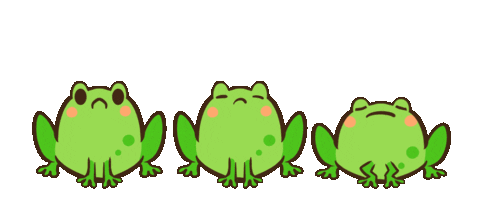

da frog da frog da frog da frog da frog

DEFINITLY NOT WIKIPEDIA COPYRIGHT 👀
A frog is any member of a diverse and largely carnivorous group of short-bodied, tailless amphibians composing the order Anura[1] (ανοὐρά, literally without tail in Ancient Greek). The oldest fossil "proto-frog" Triadobatrachus is known from the Early Triassic of Madagascar, but molecular clock dating suggests their split from other amphibians may extend further back to the Permian, 265 million years ago. Frogs are widely distributed, ranging from the tropics to subarctic regions, but the greatest concentration of species diversity is in tropical rainforest. Frogs account for around 88% of extant amphibian species. They are also one of the five most diverse vertebrate orders. Warty frog species tend to be called toads, but the distinction between frogs and toads is informal, not from taxonomy or evolutionary history.

An adult frog has a stout body, protruding eyes, anteriorly-attached tongue, limbs folded underneath, and no tail (the tail of tailed frogs is an extension of the male cloaca). Frogs have glandular skin, with secretions ranging from distasteful to toxic. Their skin varies in colour from well-camouflaged dappled brown, grey and green to vivid patterns of bright red or yellow and black to show toxicity and ward off predators. Adult frogs live in fresh water and on dry land; some species are adapted for living underground or in trees.

Frogs typically lay their eggs in water. The eggs hatch into aquatic larvae called tadpoles that have tails and internal gills. They have highly specialized rasping mouth parts suitable for herbivorous, omnivorous or planktivorous diets. The life cycle is completed when they metamorphose into adults. A few species deposit eggs on land or bypass the tadpole stage. Adult frogs generally have a carnivorous diet consisting of small invertebrates, but omnivorous species exist and a few feed on plant matter. Frog skin has a rich microbiome which is important to their health. Frogs are extremely efficient at converting what they eat into body mass. They are an important food source for predators and part of the food web dynamics of many of the world's ecosystems. The skin is semi-permeable, making them susceptible to dehydration, so they either live in moist places or have special adaptations to deal with dry habitats. Frogs produce a wide range of vocalizations, particularly in their breeding season, and exhibit many different kinds of complex behaviors to attract mates, to fend off predators and to generally survive.
